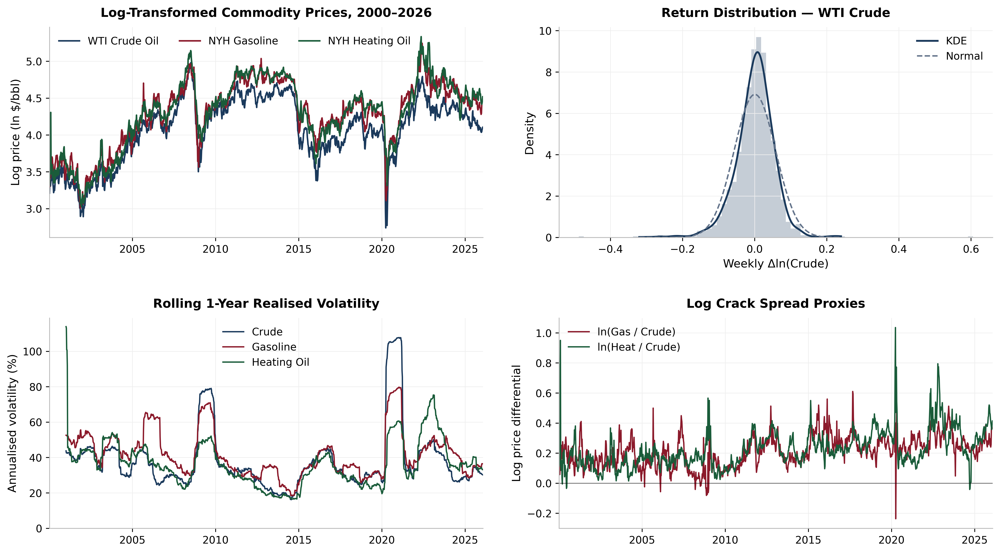
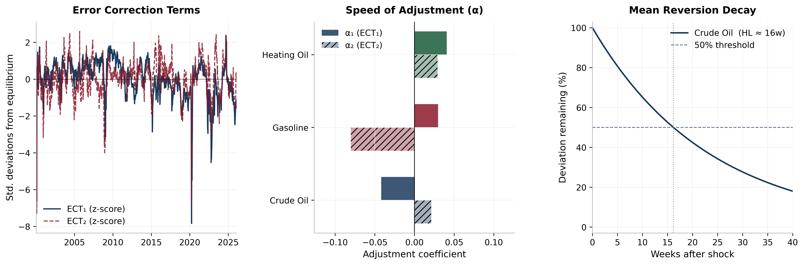
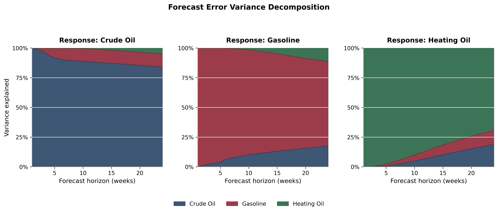
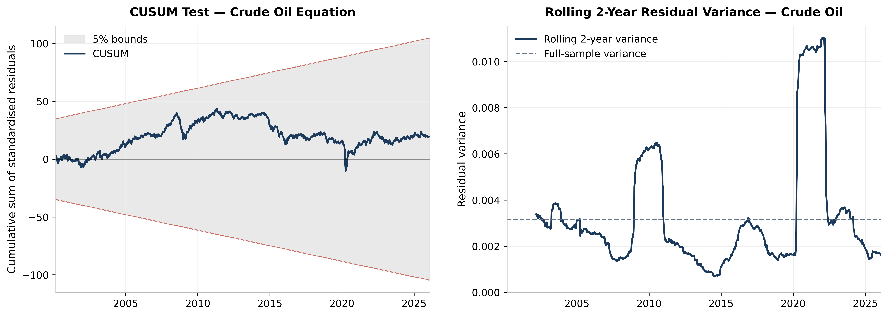

Econometric Analysis
The 3-2-1 Crack Spread:
Lead-Lag Dynamics in Energy Prices
Investigating Price Transmission between Crude Oil and Refined Products
Master's coursework, January 2026
Motivation
What Drives What?
Does crude oil push product prices up (cost-push), or does downstream demand for gasoline pull crude prices higher (demand-pull)?
Cost-Push Hypothesis
Crude oil price shocks flow downstream to gasoline and heating oil
Demand-Pull Hypothesis
Refined product demand signals flow upstream to crude oil pricing
Post-2020, structural shifts in US refining capacity and record-high crack spreads make this question more relevant than ever.
Background
The 3-2-1 Crack Spread
The theoretical gross refining margin from processing 3 barrels of crude into 2 barrels of gasoline and 1 barrel of distillate.
NYMEX futures, PADD 3 (Gulf Coast), the world's most influential refining hub
Data
Price Series Overview

Weekly spot prices (Jan 2000 – Jan 2026) from FRED & EIA. Log-transformed for elasticity interpretation. N = 1,361 observations spanning the 2008 crisis, 2014 oil glut, COVID-19, and the Ukraine conflict.
Methodology
Econometric Framework
ADF + KPSS
Johansen Test
Error Correction
Granger Tests
Why VECM? Standard regression is insufficient when variables share a long-run equilibrium. The VECM separates short-run shocks from long-run adjustment.
α = speed of adjustment | β = cointegrating vectors | Θ = short-run dynamics
Results
Cointegration: Long-Run Equilibrium
All three series are I(1): non-stationary in levels, stationary in first differences. The Johansen test finds rank r = 2:
Both exceed 1% critical values, confirming two distinct long-run equilibria consistent with the refining structure.
Cointegrating Vectors
Crude-to-heating oil margin (~0.92 elasticity)
Gasoline-to-heating oil margin (~0.91 elasticity)
Near-unitary elasticities reflect the physical cost-of-production linkage
Results
Who Bears the Adjustment Burden?

Crude oil is the only variable that significantly adjusts to the first error correction term (α1 = −0.042).
- Crude adjusts; gasoline and heating oil don't. Products lead, crude follows
- Half-life of deviation: ~16 weeks, consistent with refinery procurement cycles
- This challenges the conventional cost-push narrative
Results
Granger Causality: The Pricing Cascade
| Direction | F-stat | adj. p | Significance | Implication |
|---|---|---|---|---|
| Crude → Gasoline | 1.94 | 0.612 | — | None |
| Gasoline → Crude | 8.72 | < 0.001 | *** | Demand-Pull |
| Crude → Heating Oil | 5.45 | 0.001 | *** | Cost-Push |
| Heating Oil → Crude | 2.59 | 0.210 | — | None |
| Gasoline → Heating Oil | 8.24 | < 0.001 | *** | Demand-Pull |
| Heating Oil → Gasoline | 0.64 | 1.000 | — | None |
Bonferroni-corrected, extracted from the VECM environment
Key Finding
A Two-Stage Pricing Cascade
The evidence reveals a hybrid mechanism, not a simple cost-push or demand-pull dichotomy.
Downstream gasoline demand is the ultimate price driver. Crude oil acts as a transmission channel, not the originator.
Results
Impulse Response Functions

Crude → Products: Partial pass-through (~33% gasoline, ~40% heating oil by week 5)
Products → Crude: Near-complete transmission (~100% by week 20). Products dominate.
Results
Forecast Error Variance Decomposition

84%
Crude variance self-explained at 24 weeks
71%
Gasoline own-variance (18% from crude)
69%
Heating oil own-variance, most interconnected
Robustness
Model Diagnostics & Stability

- CUSUM test stays within 5% bounds: no structural break invalidates the model
- Ljung-Box p-values all exceed 5%: no serial autocorrelation
- ARCH effects present (p < 0.001), a known limitation; point estimates remain consistent
- Results robust across alternative lag orders and Cholesky orderings
Model Specification
Lag order: k = 5 (AIC) | Rank: r = 2 | Deterministic: restricted constant
Conclusions
Key Takeaways
1. Demand-Pull Dominates
Gasoline demand is the primary price driver, not crude oil supply shocks. Crude bears the error-correction burden.
2. Two-Stage Cascade
Gasoline pulls crude up (demand-pull), then crude pushes heating oil (cost-push), a hybrid, not a simple dichotomy.
3. Asymmetric Pass-Through
Product-to-crude transmission is near-complete (~100%), while crude-to-product pass-through is partial (~33–40%).
4. Hedging Implications
Heating oil positions should reference gasoline as the lead market; crude serves as a secondary cost conduit.
Limitations: ARCH effects suggest a GARCH or NARDL extension could capture volatility clustering and asymmetric adjustment.
Thank You
Questions?
Econometrics of Energy Markets
Master's coursework, January 2026